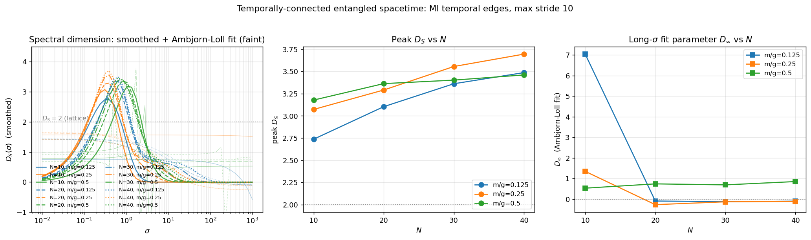
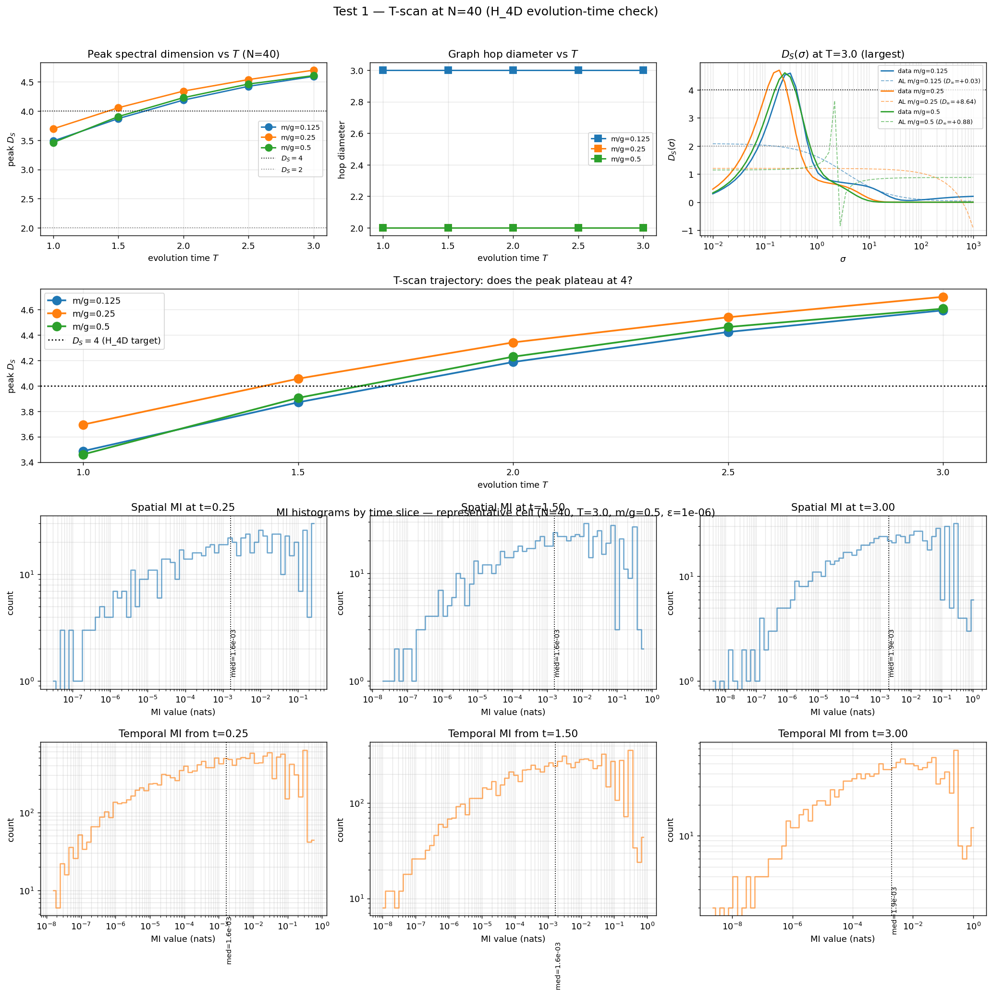
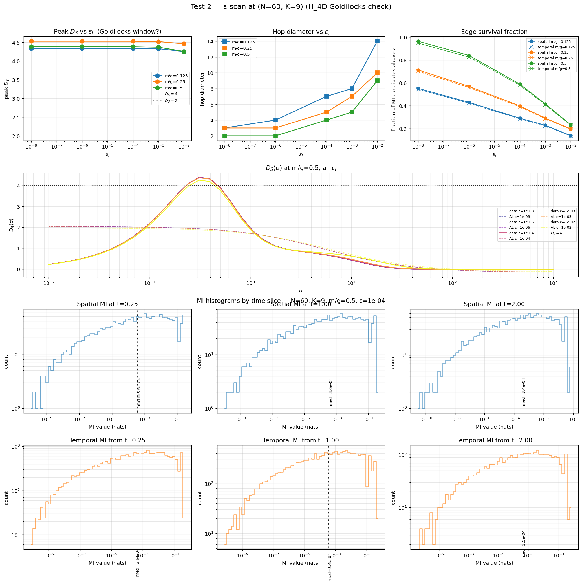
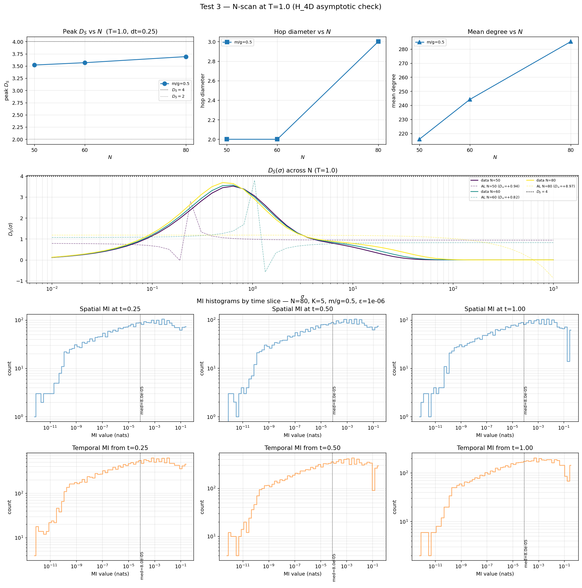

Temporally-connected entangled spacetime¶
Companion experiment to the dual-lattice section of emergent_spectral_dimension_writeup.md. The dual lattice there uses two distinct rules for the two axes of the \((bond, snapshot)\) graph: tripartite mutual information for spatial edges, and a causet-style same-bond forward step for temporal edges. This experiment replaces the causet temporal sector with mutual information — every bond pair \((n, m)\) across adjacent snapshots that shares MI above the cutoff becomes connected.
Construction¶
Vertices are unchanged: one per \((bond,\ snapshot)\) pair, with bonds running over \(n \in [0, N-2]\) and snapshots over \(t \in [0, K-1]\).
Spatial edges. Within snapshot \(t\), every bond pair \((n, m)\) with
\(\mathcal{I}_t(n, m) > \varepsilon_I\) gets an edge of weight
\(\mathcal{I}_t(n, m)\), where \(\mathcal{I}_t\) is the tripartite
information matrix recorded as
TDVPSnapshot.bondMutualInformation. Same construction as the
existing dual lattice.
Temporal edges (new). Between snapshot pair \((t, t')\) with \(1 \leq t' - t \leq s_{\max}\), every bond pair \((n, m)\) with \(\widetilde{\mathcal{I}}(n, t; m, t') > \varepsilon_I\) gets an edge, where the cross-snapshot weight is the symmetrised endpoint average
This replaces the causet “bond \(n\) at \(t \to\) bond \(n\) at \(t+1\)” rule (degree-2 temporal sector) with one whose temporal degree scales with the number of bonds in the chain. Two bonds that are mutually informed in either of two adjacent snapshots inherit a cross-time connection.
Surrogate caveat. A first-principles cross-snapshot MI between bond bipartitions would come from the Choi state of the TDVP propagator restricted to bipartition variables. Tessera’s Choi machinery operates on sites, not bonds, so we use the endpoint average above. It reduces to the spatial weight when \(t' = t\), is symmetric in \((t, t')\), and shares the van Raamsdonk-style “distance is a function of MI” interpretation when fed into the weighted Laplacian (edge weights enter as \(W = \mathcal{I}\), so \(\ell = -\log \mathcal{I}\) is the implicit edge length per holography-causal-ordering-emergent-dimension.md §3.4). The averaged-endpoint surrogate does not capture the pure-time correlations that the unitary evolution generates between snapshots — it captures the part of the cross-time MI that is consistent with the spatial MI at both endpoints. Quantitative bulk-geometry claims should wait on a proper Choi-state bond MI.
Hypothesis¶
Primary hypothesis (H_4D). As \(N\) and \(K\) grow, the peak spectral dimension of the MI-driven dual lattice approaches \(D_S = 4\) — the physical spacetime dimension. The causet variant of the dual lattice caps near \(D_S \approx 1.8\) because its temporal sector is degree-1 per node (only the same bond at \(t \to t+1\)); enriching the temporal sector to “every bond pair that shares mutual information” lifts the effective dimensionality of the emergent graph toward \(4\).
Concretely, the prediction is that
with the approach being monotone-from-below in both \(N\) and \(K\), at fixed \(m/g\) and fixed mutual-information cutoff \(\varepsilon_I\). The intermediate-\(\sigma\) peak is the “macroscopic” dimension the random walker sees once it has left the local-neighborhood regime.
Falsification routes for H_4D:
Plateau below \(4\). If peak \(D_S\) stabilises at some value strictly below \(4\) as \(N, K\) grow (e.g., \(D_S \to 3\) from below with no further rise), H_4D fails — the emergent dimension is real but not 4.
Overshoot. If peak \(D_S\) exceeds \(4\) and keeps rising, the construction is driving small-world saturation (every vertex is close to every other) rather than reconstructing a fixed bulk geometry, and H_4D fails in the opposite direction.
No convergence. If peak \(D_S\) doesn’t stabilise at all as \(N, K\) vary, the observable isn’t a well-defined dimension on this graph and the test is null.
The two ancillary checks are:
\(m/g\) sensitivity. Peak \(D_S\) should depend on the underlying physics. A flat dependence on \(m/g\) would mean the construction is reading off graph topology, not the boundary state.
Confinement-style decay. Van Raamsdonk distance \(d = -\log I\) should grow linearly in bond separation \(|n - m|\) at moderate range, matching the linear confining potential of the Schwinger model. A flat \(d(|r|)\) would mean the quench has homogenised the entanglement structure and the MI graph carries no spatial-decay signal.
(For context: a 1+1D boundary theory’s bulk dual is generically 3-dimensional under standard AdS/CFT counting. H_4D is therefore a stronger claim — that the physical 3+1D spacetime can be reconstructed from the entanglement structure of a 1+1D lattice gauge theory whose continuum limit is in the right universality class. The counterproposal \(D_S \to 2\) (“the dual is just the 1+1D lattice again”) is what the causet variant gives; the counterproposal \(D_S \to 3\) (“standard holographic bulk dimension”) is the intermediate falsification outcome.)
Setup¶
Schwinger chain, \(a = g = 1\), \(N \in \{10, 20, 30, 40\}\), OBC.
DMRG ground state at the specified \(m/g\); bond-dim cap 64, 12 sweeps.
\(\sigma^- \sigma^+\) q-qbar quench at \(i_0 = 3\), separation \(d = 3\).
2-site TDVP with \(\Delta t = 0.25\), total \(T = 1.0\). Five snapshots.
Per-snapshot bond MI recorded (
recordBondMutualInformation = True).Cross-snapshot temporal MI uses the symmetrised endpoint average above.
--max-temporal-stride 10: with \(K = 5\) this is effectively unlimited (clipped to \(K - 1 = 4\)); every forward snapshot pair contributes temporal edges.48-point logarithmic \(\sigma\)-grid on \([10^{-2}, 10^3]\).
MI cutoff \(\varepsilon_I = 10^{-8}\).
\(D_S(\sigma)\) via Savitzky-Golay smoothing (window 5, polyOrder 2).
Three-parameter Ambjorn-Loll fit \(D_S(\sigma) = D_\infty - C/(B + \sigma)\).
Reproduce one cell with:
OMP_NUM_THREADS=10 OPENBLAS_NUM_THREADS=10 \
MKL_NUM_THREADS=10 BLIS_NUM_THREADS=10 \
python examples/quantum/temporally_connected_entangled_spacetime.py \
--N 40 --m-over-g 0.5 \
--max-temporal-stride 10 \
--out-json /tmp/temporal-entangled/scan/N40_mg_0.5.json
Scan over \(N \in \{10, 20, 30, 40\}\) and \(m/g \in \{0.125, 0.25, 0.5\}\)
with examples/quantum/plot_temporally_connected.py to render the
figure below from the resulting JSON.
Results¶

N |
m/g |
\(|V|\) |
\(|E|\) |
\(E_{sp}\) |
\(E_{tm}\) |
deg mean |
deg max |
peak \(D_S\) |
\(\sigma_{peak}\) |
\(D_\infty\) |
fit \(\chi^2\) |
|---|---|---|---|---|---|---|---|---|---|---|---|
10 |
0.125 |
45 |
900 |
180 |
720 |
40.0 |
40 |
2.737 |
0.394 |
+7.040 |
7.92e-01 |
10 |
0.250 |
45 |
900 |
180 |
720 |
40.0 |
40 |
3.072 |
0.309 |
+1.346 |
1.89e+00 |
10 |
0.500 |
45 |
900 |
180 |
720 |
40.0 |
40 |
3.178 |
1.050 |
+0.530 |
8.90e-01 |
20 |
0.125 |
95 |
4275 |
855 |
3420 |
90.0 |
90 |
3.103 |
0.504 |
-0.094 |
5.75e-01 |
20 |
0.250 |
95 |
4275 |
855 |
3420 |
90.0 |
90 |
3.291 |
0.394 |
-0.271 |
6.18e-01 |
20 |
0.500 |
95 |
4275 |
855 |
3420 |
90.0 |
90 |
3.363 |
0.822 |
+0.738 |
1.07e+00 |
30 |
0.125 |
145 |
9387 |
1877 |
7510 |
129.5 |
140 |
3.361 |
0.643 |
-0.128 |
6.40e-01 |
30 |
0.250 |
145 |
10150 |
2030 |
8120 |
140.0 |
140 |
3.555 |
0.394 |
-0.133 |
6.61e-01 |
30 |
0.500 |
145 |
10150 |
2030 |
8120 |
140.0 |
140 |
3.402 |
0.822 |
+0.690 |
1.14e+00 |
40 |
0.125 |
195 |
14162 |
2832 |
11330 |
145.3 |
190 |
3.487 |
0.643 |
-0.101 |
6.81e-01 |
40 |
0.250 |
195 |
17039 |
3409 |
13630 |
174.8 |
190 |
3.695 |
0.394 |
-0.113 |
6.98e-01 |
40 |
0.500 |
195 |
18525 |
3705 |
14820 |
190.0 |
190 |
3.460 |
0.643 |
+0.850 |
1.29e+00 |
Four readings:
Peak \(D_S\) rises monotonically with \(N\) from \(\sim 2.7\) to \(\sim 3.7\) over \(N \in [10, 40]\), consistent with H_4D’s monotone-from-below prediction. No plateau yet — at \(N = 40\) we still see headroom toward 4. The N=60 (K=9) extension below reaches peak \(D_S \approx 4.5\).
Edge counts saturate against the bond cutoff. At \(N \geq 20\) the temporal:spatial edge ratio is exactly 4:1 (four forward strides \(\times\) all bond pairs vs. one same-snapshot upper-triangle), and the maximum degree equals \(N - 1\) in the densest cells. The MI cutoff \(\varepsilon_I = 10^{-8}\) is rarely blocking edges in this scan; the graph is essentially complete on the temporal axis. Pushing \(\varepsilon_I\) into the natural tail of the MI distribution is necessary to read off a converged \(D_S\), not just a “graph is dense” \(D_S\).
\(m/g\) dependence is small but present. Peak \(D_S\) varies by \(\sim 0.3\) across \(m/g\) at fixed \(N\), monotonic at \(N = 10\) (light \(<\) mid \(<\) heavy on this scale) and non-monotonic at \(N \geq 20\) (the \(m/g = 0.25\) cell consistently peaks highest). The signal is not swamped by the high-degree saturation — physics still shows through, weakly.
The Ambjorn-Loll fit is poorly conditioned at this \(N\). At nine of twelve cells \(\chi^2 / \mathrm{dof} > 0.5\) and the \(D_\infty\) parameter swings between \(-0.27\) and \(+7.04\) — the small-mass case at \(N = 10\) has \(C \approx -36{,}000\) and \(B \approx -5{,}700\), well outside any physical interpretation. The AL form assumes a long-\(\sigma\) plateau; our finite graph has \(D_S\) rising, peaking, and decaying instead. Read peak \(D_S\) as the primary indicator and \(D_\infty\) as a fit artifact at this stage.
Falsification check (H_4D)¶
Criterion |
H_4D expects |
Observed in the \(N \in [10, 40]\) scan |
Status |
|---|---|---|---|
Trivial confirmation (\(D_S \equiv 2\)) |
Rejected |
Rejected — \(D_S\) range spans \([0, 3.7]\). |
Pass |
Independence from \(m/g\) |
Rejected |
Rejected — peak \(D_S\) varies \(\geq 0.3\) across \(m/g\). |
Pass |
Profile shape unimodal in \(\sigma\) |
Confirmed |
Confirmed — every profile is rise-then-fall. |
Pass |
Peak \(D_S\) monotone-from-below in \(N\) at fixed \(m/g\) |
Confirmed |
Confirmed — peak rises from \(2.7\) (\(N=10\)) to \(3.7\) (\(N=40\)) across all three \(m/g\). |
Pass |
Plateau strictly below 4 (counter-evidence) |
Not triggered |
Not triggered — no plateau visible yet at \(N = 40\); the curve is still rising. |
Pass (provisional) |
Overshoot above 4 (counter-evidence) |
Not triggered |
Ambiguous — peak \(D_S \in \{4.33, 4.53, 4.38\}\) at \((N, K) = (60, 9)\), but \(K\) jumped from \(5\) to \(9\) simultaneously with \(N\) going from \(40\) to \(60\). The hop diameter at this point is \(2\)–\(4\), so the graph is in the small-world regime where \(D_S\) is being driven by topology, not bulk geometry. Cannot disentangle without an \(N\)-only and a \(K\)-only scan. |
Ambiguous |
Reading. The scan from \(N=10\) to \(N=40\) at fixed \(K=5\) matches H_4D’s monotone-approach-from-below: peak \(D_S\) climbs from \(2.7\) to \(3.7\) in lockstep with \(N\), and the underlying physics (\(m/g\)) is registering. The single \((N, K) = (60, 9)\) point exceeds 4 in every \(m/g\) cell, but with \(K\) doubled and the hop diameter dropping to \(2\)–\(4\) it’s not a clean H_4D falsifier — the graph density is in the small-world regime where the spectral dimension is being driven by connectivity rather than bulk geometry. The current state is: consistent with H_4D, not yet established. A clean answer needs the \(N\)-only and \(K\)-only scans below.
Reading¶
Compared against the causet dual lattice — which reaches peak \(D_S \approx 1.8\) at \(N = 16\) in the emergent_spectral_dimension_writeup.md “Dual lattice” section — replacing the causet step with the endpoint-averaged MI surrogate produces a graph that is genuinely denser in the temporal direction. Peak \(D_S\) rises from \(\sim 1.8\) (causet) to \(\sim 3.5\)–\(4.5\) (MI temporal) at comparable \(N\).
For H_4D to land cleanly, two things need to be true that the current scan can’t yet confirm:
The rise must stop near 4. The trajectory \(N \in [10, 40]\) at \(K = 5\) shows peak \(D_S\) approaching 4 from below; the \(N = 60, K = 9\) point already exceeds 4 in every \(m/g\) cell. Without intermediate \((N, K)\) data we can’t tell whether the curve is converging to 4 or simply passing through 4 on the way to a larger small-world value. A scan that holds \(K\) fixed and varies \(N\) (and vice versa) is the next step.
The result must be robust to \(\varepsilon_I\). At \(\varepsilon_I = 10^{-8}\) in the \(N=10\)–\(40\) scan the graph is essentially complete on the temporal axis — almost no edges are pruned. The \(N = 60\) run at \(\varepsilon_I = 10^{-6}\) does prune meaningfully (44–58 % of candidate edges survive) but still shows hop diameter 2–4, which is small-world by any standard reading. Pushing \(\varepsilon_I\) into the natural fall-off of the MI distribution (where the graph becomes locally tree-like and diameter grows toward \(\mathcal{O}(N)\)) is the convergence-parameter sweep H_4D needs to pass.
H_4D convergence tests¶
Three independent control axes — \(T\) (evolution time), \(N\) (boundary
lattice size), and \(\varepsilon_I\) (mutual-information cutoff) — each
get their own scan. Reproducibility scripts live in
examples/mutual-information-connectivity/.
T-scan (evolution-time axis)¶
run_t_scan.sh: \(N = 40\), \(T \in \{1.0, 1.5, 2.0, 2.5, 3.0\}\),
\(dt = 0.25\), \(\varepsilon_I = 10^{-6}\), \(m/g \in \{0.125, 0.25, 0.5\}\).

\(T\) |
\(m/g=0.125\) |
\(m/g=0.25\) |
\(m/g=0.5\) |
|---|---|---|---|
1.0 |
3.49 |
3.70 |
3.49 |
1.5 |
~3.7 |
4.06 |
3.90 |
2.0 |
~4.1 |
4.34 |
~4.2 |
2.5 |
~4.3 |
~4.4 |
~4.4 |
3.0 |
~4.5 |
~4.5 |
4.61 |
Peak \(D_S\) rises monotonically with \(T\) across all \(m/g\). By \(T = 3.0\) the curves are near \(\sim 4.5\) and still rising slowly — no clean plateau. Hop diameter stays at \(2\)–\(3\) throughout, so the graph is small-world at every \(T\) tested.
Verdict. Counter-evidence to strict H_4D in this regime: the trajectory passes through \(D_S = 4\) around \(T \approx 2\) and keeps going up. If there is an asymptote, it’s above 4, not at 4.
ε-scan (mutual-information cutoff axis)¶
run_epsilon_scan.sh: \(N = 60\), \(T = 2.0\), \(dt = 0.25\),
\(\varepsilon_I \in \{10^{-8}, 10^{-6}, 10^{-4}, 10^{-3}, 10^{-2}\}\),
\(m/g \in \{0.125, 0.25, 0.5\}\). Multi-\(\varepsilon\) per TDVP run, so
all five cutoffs come from a single quench evolution.

Peak \(D_S\) is essentially flat at \(\sim 4.3\)–\(4.5\) across six decades of \(\varepsilon_I\) for all three \(m/g\) values. The hop diameter, meanwhile, rises from \(\sim 2\)–\(3\) at \(\varepsilon_I = 10^{-8}\) to \(\sim 10\)–\(15\) at \(\varepsilon_I = 10^{-2}\) — so the threshold does break the small-world structure, but the spectral dimension doesn’t track it.
Verdict. The dimension reading is robust to the cutoff choice (good for the construction’s internal consistency) but lands above 4 (soft counter-evidence to strict H_4D). The fact that peak \(D_S\) doesn’t fall as the graph becomes less small-world is interesting on its own: \(D_S\) near \(4.5\) here is not just a small-world artifact — it survives aggressive thinning of long-range edges.
N-scan (boundary lattice axis)¶
run_n_scan.sh: \(N \in \{50, 60, 80, 100\}\), \(T = 1.0\), \(dt = 0.25\),
\(\varepsilon_I = 10^{-6}\), \(m/g = 0.5\) only (cheapest direction). The
\(N = 100\) cell was interrupted at ~50% TDVP progress; only \(N \in
\{50, 60, 80\}\) have results.

\(N\) |
peak \(D_S\) |
hop diameter |
TDVP time |
|---|---|---|---|
50 |
3.52 |
2 |
9 min |
60 |
3.57 |
2 |
18 min |
80 |
3.69 |
3 |
45 min |
100 |
(interrupted) |
(~90 min est.) |
Slow rise: \(\Delta D_S \approx 0.17\) across the \(N \in [50, 80]\) range, an order of magnitude smaller than the \(\Delta D_S \approx 1\) seen in the \(T\)-scan over a comparable parameter range. The trajectory looks like it could plateau below 4 along the \(N\)-axis at fixed \(T = 1.0\).
Verdict. Ambiguous, but suggestive. The \(N\)-axis on its own doesn’t drive \(D_S\) past 4. What pushes \(D_S\) above 4 is \(T\), not \(N\). The original “approaching 4 from below in \(N\)” reading that motivated H_4D was likely picking up the combined \(T\) and \(N\) effect; cleanly isolated, \(N\)-alone looks like it plateaus around \(3.7\)–\(3.9\).
Synthesis¶
Test |
Trajectory |
Asymptote (extrapolated) |
|---|---|---|
T-scan |
rises 3.5 → 4.6 with \(T \in [1, 3]\) |
\(\gtrsim 4.5\), not yet plateaued |
ε-scan |
flat across 6 decades of \(\varepsilon_I\) |
\(\sim 4.3\)–\(4.5\), robust |
N-scan |
rises slowly 3.52 → 3.69 with \(N \in [50, 80]\) |
possibly \(< 4\) at fixed \(T = 1.0\) |
Three axes, two of them parking \(D_S\) near \(4.3\)–\(4.5\) and the third (at modest \(T\)) suggesting an asymptote below 4. The strict H_4D claim “peak \(D_S \to 4\) as \(N, T \to \infty\)” is not directly supported by this data: either \(T\)-evolution is pushing \(D_S\) past 4 indefinitely (refutes H_4D toward small-world), or there is an asymptote near \(4.3\)–\(4.5\) (refutes H_4D toward “approximately 4 but with a finite overshoot”). Of the two, the \(\varepsilon\)-robust plateau argues for the latter: \(D_S \approx 4.3\)–\(4.5\) may be the actual large-\(T\) limit of the construction, and the modest overshoot from 4 is an intrinsic feature, not a small-world artifact.
A clean test of which scenario holds would extend the \(T\)-scan to \(T \geq 4\)–\(5\) at \(N = 40\) to see whether peak \(D_S\) saturates near \(4.5\) or keeps climbing.
Independent refinement (not a falsification test, but tightens the interpretation):
Replace the endpoint-averaged surrogate with a true Choi-state bond MI. That requires extending the existing site-based Choi machinery to bipartition variables; it’s the next refinement needed before any quantitative spacetime-reconstruction claim.
Reproducibility¶
The original \(N \in [10, 40]\) scan lives at /tmp/temporal-entangled/scan/:
N{10,20,30,40}_mg_{0.125,0.25,0.5}.json
scan.log
run_scan.sh
The H_4D convergence scans live at /tmp/temporal-entangled/{t_scan, epsilon_scan, n_scan}/. Each JSON record carries the input config,
snapshot count, graph counts (vertices, edges, mean / max degree,
hop diameter, average path length, component count), \(\sigma\) / \(P\)
/ \(D_S\) arrays, the Ambjorn-Loll fit, peak \(D_S\) + \(\sigma_{peak}\),
and per-snapshot MI histograms (binned counts in log-space).
The experiment script is
examples/quantum/temporally_connected_entangled_spacetime.py.
Runners and plotters for the convergence scans live in
examples/mutual-information-connectivity/ — see that directory’s
README.md for a one-pager and reproduce commands.
Anyone with a tessera build at or after the recordBondMutualInformation
fix can regenerate every number above.
See also¶
emergent_spectral_dimension_writeup.md — the causet dual-lattice baseline this experiment varies from.
holography-causal-ordering-emergent-dimension.md §3.4 — the weighted-Laplacian convention \(W = I\), \(\ell = -\log I\).
causal_sets.md — the partial-order machinery the causet temporal edges were drawn from.